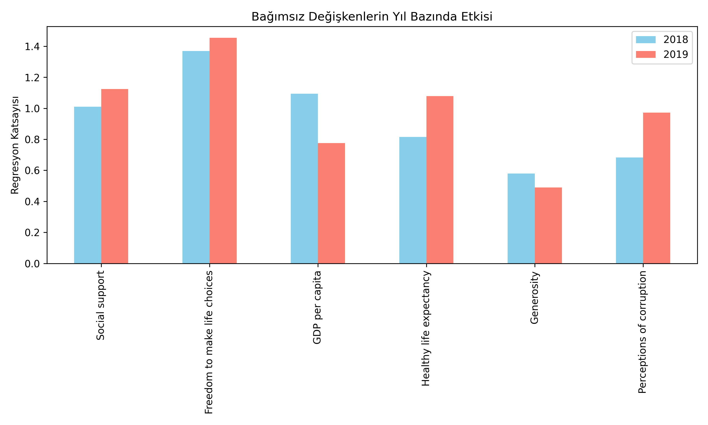
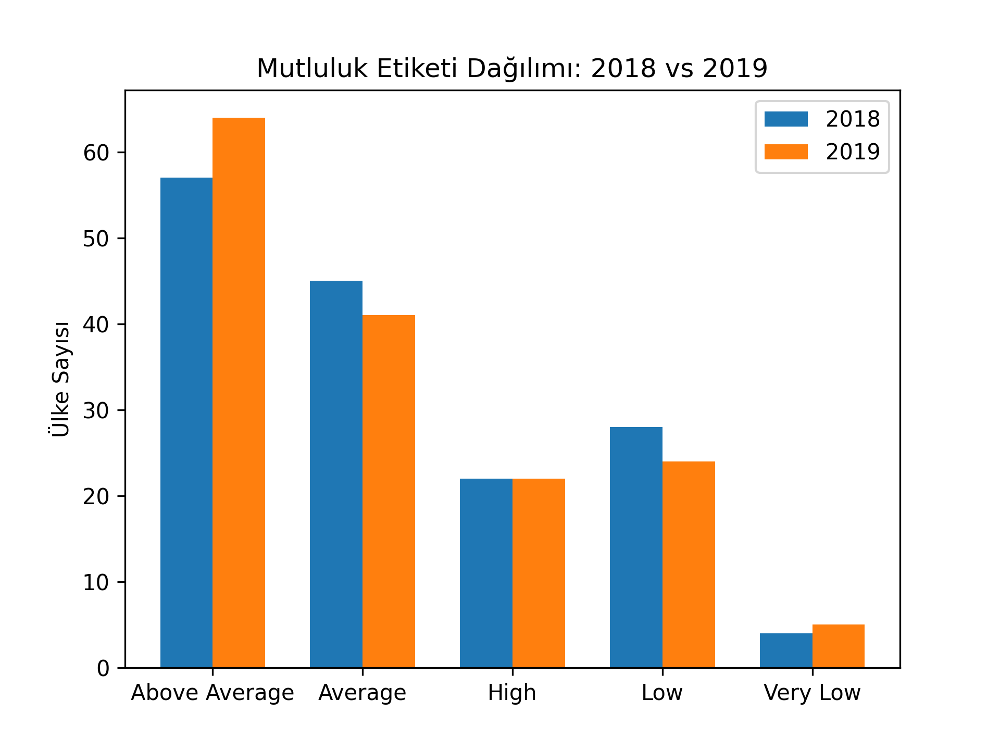
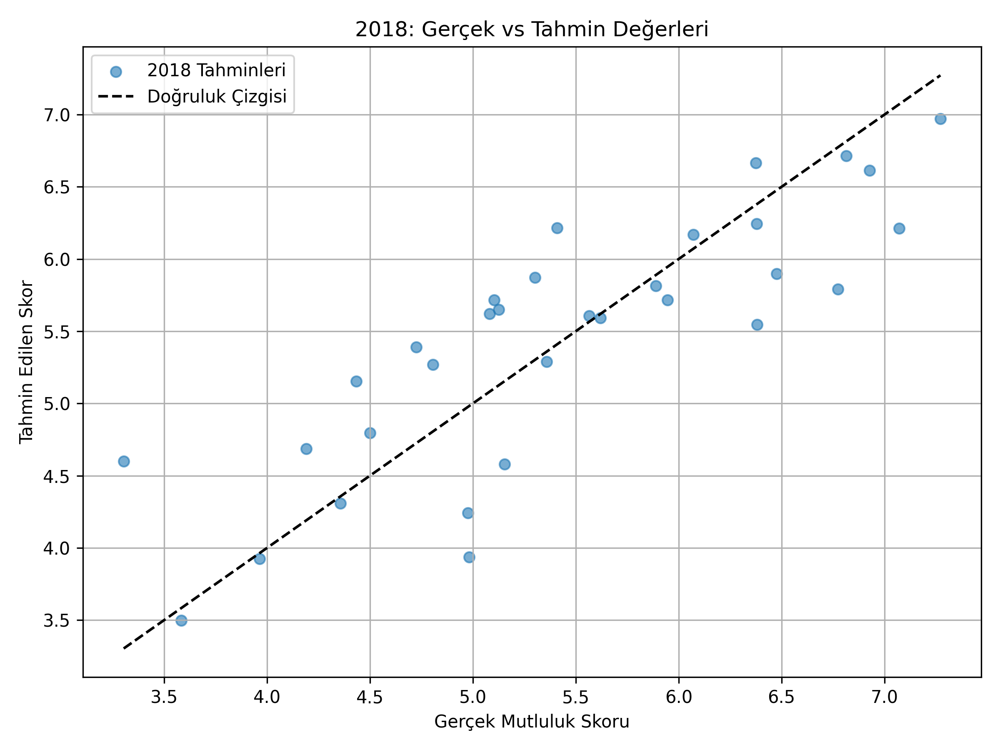
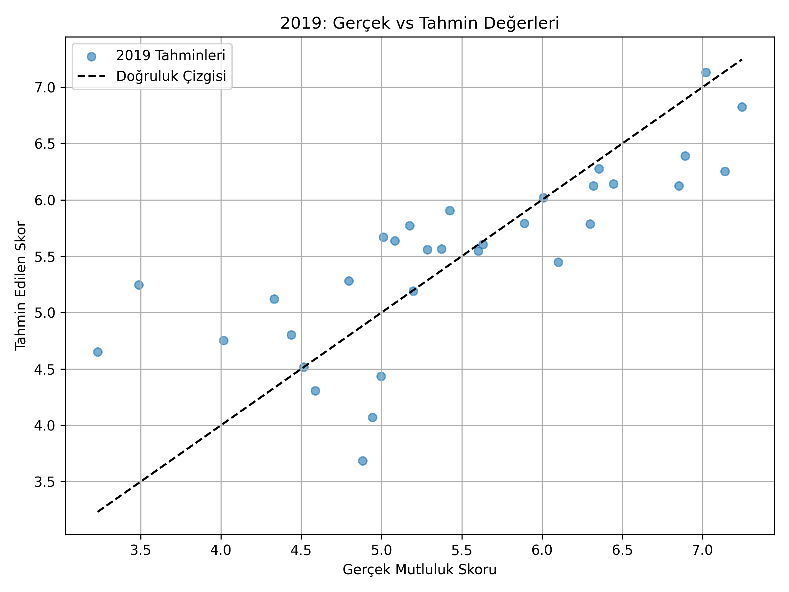
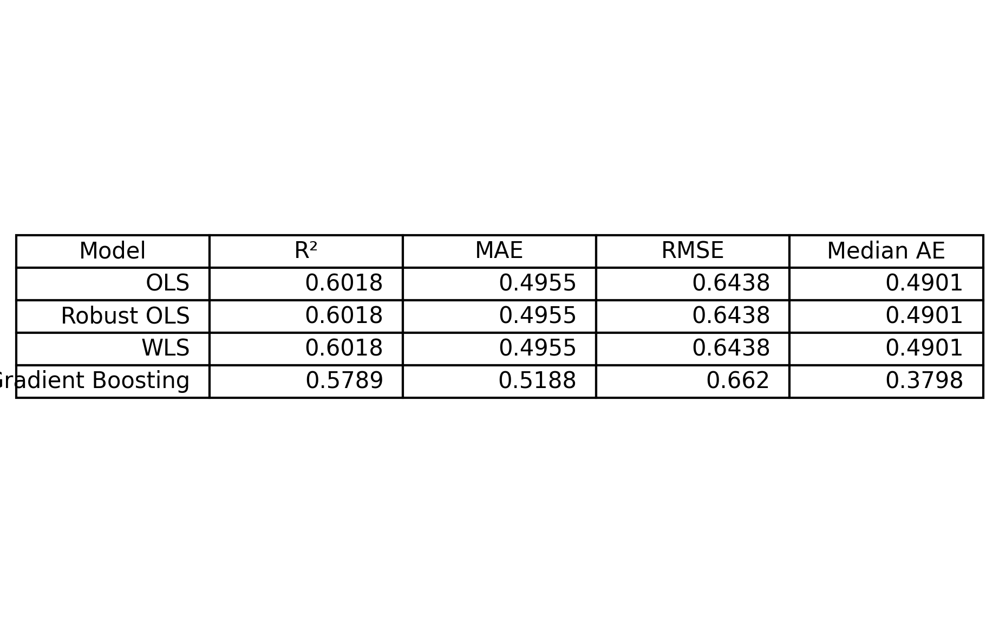
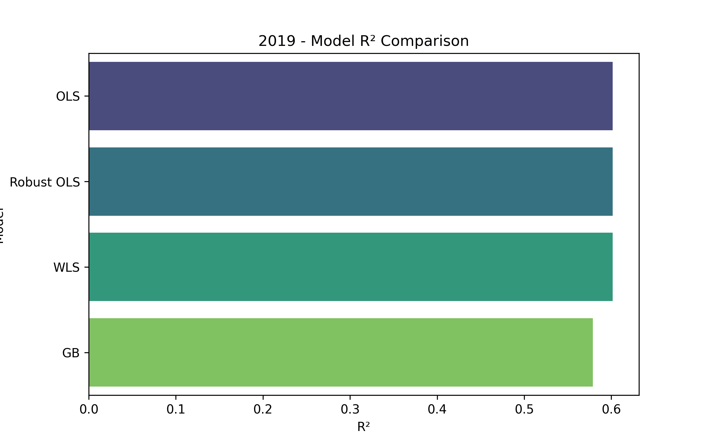
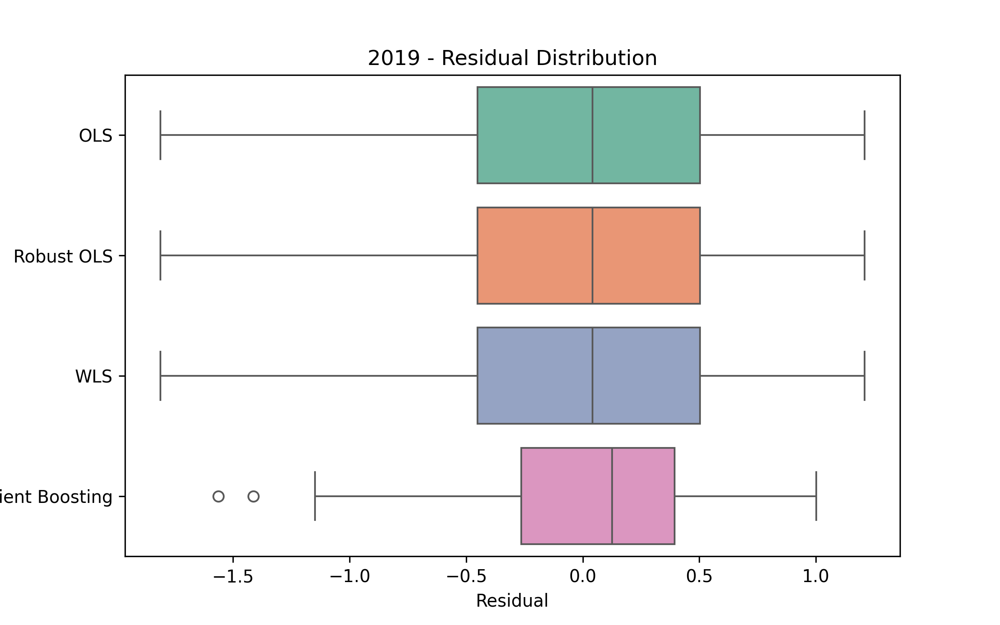
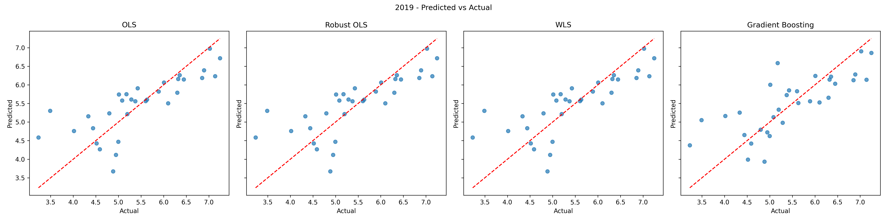

🎯 The Goal of My Project
In this project, I worked with the 2018 and 2019 World Happiness datasets. My aim was to analyze the internal structure of each year's data and explore the differences and changes between them over time. ➕In addition to obtaining prediction results, I sought to perform a comprehensive statistical analysis that included evaluating the model, testing regression assumptions, and comparing coefficients to gain deeper insights into the data.
📌 Variables
- 💰 GDP per capita
- 🤝 Social support
- 🏥 Healthy life expectancy
- 🗽 Freedom to make life choices
- 💝 Generosity
- ⚖️ Perceptions of corruption
🧮 Models Tested
- OLS (Ordinary Least Squares)
- Robust OLS
- Log OLS
- WLS (Weighted Least Squares)
- Gradient Boosting
📊 Evaluation Criteria
- 📐 AIC
- 📏 BIC
- 📊 R-squared (R²)
- 🔗 Correlation with Happiness Score
- 🔍Regression Assumptions
- 📈Confidence Intervals
- 💡Model Comparison
🏆 Outcomes
- 2018 → OLS model performed best
- 2019 → Robust OLS model performed best
This framework was designed to be modular, reusable, and well-documented, making it adaptable for other datasets or extended with additional statistical methods.
‼️💡 More details: Project Repository
📊Effect of Variables by Year
This graph shows the change in factors affecting happiness scores over the years..
📢Looking at the variable effects chart, we see that in 2019 the effects of social support, freedom to make life choices, healthy life expectancy, and perception of corruption increased, while the effects of GDP per capita and generosity decreased.These changes are generally around ±0.2. However,since the effects of perception of corruption and generosity are quite weak, we can mostly talk about their indirect influence rather than a direct one.
From these results, it can be said that freedom to make life choices has a very important and key role in happiness scores. At the same time, social support—reflecting interpersonal relationships—and factors with roughly the same level of influence, such as income distribution (GDPper capita) and healthy life expectancy, are among the most influential and should be considered carefully.
Both generosity and social support relate to social relationships, but the weak effect of generosity can be explained in a few ways: Generosity mainly refers to helping others, while social support is more about receiving help—support that people get during difficult times or when in need.
Another important difference is that generosity is often limited to our close social circle, whereas social support can come both from personal networks like family and friends and from more structured sources such as institutions or organizations.Therefore, the scope of support and impact on individuals can differ significantly.
😊Happiness Label Distribution
The distribution of happiness scores by labels is shown in the graph below..
📢In the happiness label distribution bar chart, the "above average" label increased in 2019 compared to 2018. The "average" and "low" labels slightly decreased in 2019, while the "very low" label showed a small increase. For the "high" label, we don't see any change.
From this, we can say that in 2019 the labels shifted more toward the extremes. As the "average" label decreased, the "above average" and "very low" labels increased. However, the fact that the "high" label didn't change suggests that this shift wasn't very strong. There could be a few reasons for this shift---> We previously found that GDP per capita had a stronger positive effect on the happiness score in 2018.The decrease in GDP per capita's effect might have influenced the label changes. Another factor affecting the label changes could be the combination of independent variables. for example: The "freedom to make life choices" variable is the most influential variable.However,when we compare the United Kingdom's 2018 and 2019 data, we see that the freedom to make life choice variable decreased in 2019, while GDP per capita, social support, and healthy life expectancy scores increased. This could explain the difference in 2018 labels and why the 2019 label didn't change. Perhaps the increase in freedom to make a life choice balance out the decreases in the other variables.
⚖️ Model Selection & Machine Learning Comparison
2018: OLS model was selected because no heteroskedasticity was detected and the model fit the data well. It provided strong interpretability and simplicity.
2019: Significant heteroskedasticity was present. After evaluating OLS, Robust OLS, WLS, and Log OLS:
- Robust OLS reduced but did not eliminate heteroskedasticity; still less sensitive to outliers than OLS.
- WLS achieved very high R² but was likely overfitted due to outlier influence.
- Log OLS had low AIC/BIC but made interpretation more complex.
Based on this, Robust OLS was chosen for 2019.
📈 Additional ML Model Evaluation
To complement statistical models, Gradient Boosting Regressor was tested for both years.
- 2018:Gradient Boosting R² ≈ 0.607, lower than OLS (0.692), with slightly higher errors → data likely linear.
- 2019:Gradient Boosting R² ≈ 0.579, slightly below Robust OLS (0.602) → small difference, but no gain without tuning.
Interpretation: Classical regression models outperformed boosting in both years. ML models still served as robustness checks and confirmed the dominance of linear relationships in the World Happiness data.
🏆 Final Selection
- 2018 → OLS
- 2019 → Robust OLS
🔍Actual Values and Regression Predicted Values 2018
Comparison of model-predicted happiness scores with actual scores for 2018.
📢In the 2018 dataset, the OLS model produced predictions very close to the actual values for most countries, with the majority of points lying near the 45° reference line—indicating a strong overall fit. However, there is a slight underestimation tendency for high happiness scores and some overestimation for lower scores, suggesting that the model's performance at extreme values is slightly weaker compared to mid-range values.
🔍Actual Values and Regression Predicted Values 2019
Comparison of model-predicted happiness scores with actual scores for 2019.
📢In the 2019 dataset, the Robust OLS model produced predictions close to the actual values for most countries, with points clustering near the 45° line. Slight underestimation appears at higher scores, while some overestimation occurs at lower scores, indicating slightly weaker performance at extreme values.
📊 Performance Metrics & Visual Comparisons
📊 Performance Table
📊 Visual Comparisons
You can view the model R², error metrics, and residual distributions in the following charts:
  